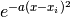

Code Prop TB¶
-
class
propTB.propTB(lat, steps, dz)[source]¶ Bases:
objectGet lattice time evolution. Time dependent Schrödinger equation solved by Crank-Nicolson method.
-
get_prop_nonlin(ham, psi_init, nu=0, norm=True)[source]¶ Get the time evolution.
Parameters: - ham – Tight-Binding Hamilonian.
- psi_init – Initial state.
- norm – Default value True. Normalize the norm to 1 at each step.
-
get_prop(ham, psi_init, norm=True)[source]¶ Get the time evolution.
Parameters: - ham – Tight-Binding Hamilonian.
- psi_init – Initial state.
- norm – Default value True. Normalize the norm to 1 at each step.
-
get_pump(hams, psi_init, nu=0, norm=True)[source]¶ Get the time evolution under adiabatic pumpings.
Parameters: - hams – Tight-Binding Hamilonians.
- psi_init – Initial state.
- norm – Default value True. Normalize the norm to 1 at each step.
-
plt_prop1d(fs=20)[source]¶ Plot time evolution for 1D systems.
Parameters: fs – Default value 20. Fontsize.
-
prop_smooth1d(prop, a=14.0, no=40)[source]¶ Smooth propagation for 1D systems. Perform Gaussian interpolation ,
Parameters: - prop – Propagation.
- a – Default value 10. Gaussian Parameter.
- no – Default value 40. Number of points of each Gaussians.
Returns: - smooth – Smoothed propagation.
-
get_ani(s=300, fs=20)[source]¶ Get time evolution animation.
Parameters: - s – Default value 300. Circle shape.
- fs – Default value 20. Fontsize.
Returns: - ani – Animation.
-